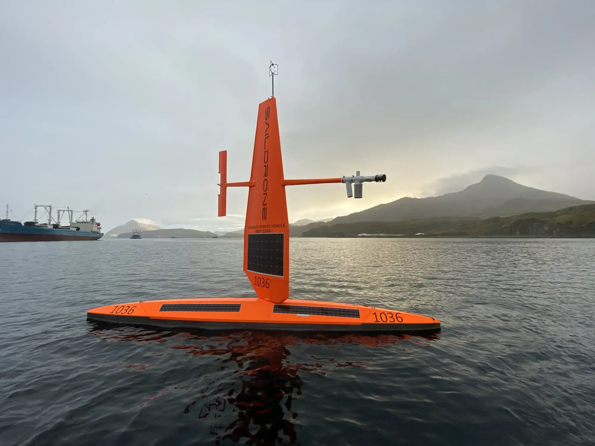
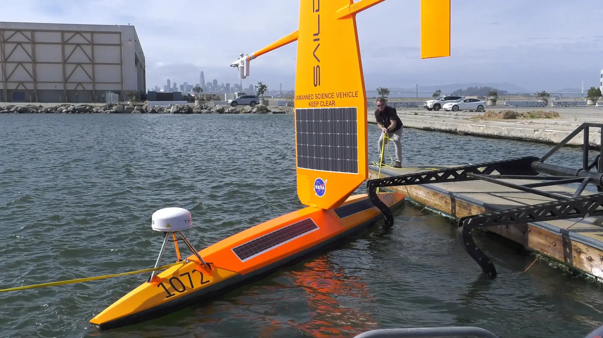
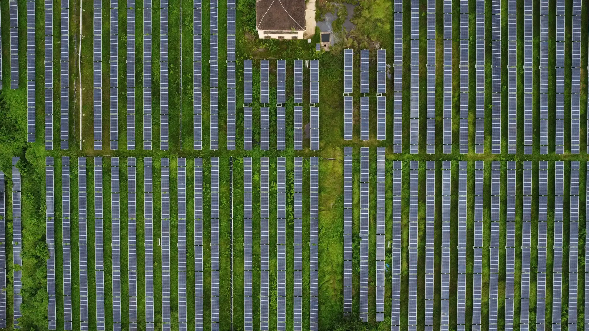

One software factory for the whole portfolio.
Agents at your companies build tools every day. The factory checks each one, seals the exact version, and reads the fund’s ontology to find who else should have it.
Explore a demo fundAlso runs in Cursor.
 Common Ground
Common Ground
telemetry-qc › src › inspector.ts
1import type { Binding, Report } from './binding';
2import { grid, parseTime } from './grid';
3import { readValue } from './parse';
4
5// Completeness for one day of minute data. Missing values are not zeros.
6export function inspect(rows: string[][], b: Binding): Report {
7 const header = rows[0];
8 const ti = header.indexOf(b.timeColumn), vi = header.indexOf(b.signalColumn);
9 const body = rows.slice(b.skipUnitsRow ? 2 : 1);
10 const seen = new Map<string, number>();
11 let missingValues = 0, zeroValues = 0, malformed = 0;
12 let duplicateRows = 0, outsideGrid = 0;
13
14 for (const row of body) {
15 const t = parseTime(row[ti], b.timeBasis);
16 if (!t) { malformed++; continue; }
17 if (seen.has(t)) duplicateRows++;
18 seen.set(t, (seen.get(t) ?? 0) + 1);
19 const v = readValue(row[vi]);
20 if (v === null) missingValues++;
21 else if (v === 0) zeroValues++;
22 }
23
24 const expected = grid(b.start, b.end, b.cadenceSeconds);
25 const missingTimestamps = expected.filter((t) => !seen.has(t));
26 for (const t of seen.keys()) if (!expected.includes(t)) outsideGrid++;
27
28 return {
29 rows: body.length, uniqueTimestamps: seen.size, duplicateRows,
30 missingTimestamps, outsideGrid, missingValues, zeroValues,
31 malformedValues: malformed, physicalValidity: 'not_assessed',
32 };
33}
34
35// Units live in row two of the Saildrone export; never count them as data.
36export const marine: Binding = { timeColumn: 'time', signalColumn: 'WIND_SPEED_MEAN', skipUnitsRow: true };
- telemetry-inspector · sandbox: 32 MB, 800 ms, no network, no files
- ✓ NOAA: 1,440 rows, 55 missing wind values
- ✓ PVDAQ: 1,440 rows, negative power preserved
- ✓ Detect three missing timestamps and one duplicate
- ✓ First and last missing observations are detected
- ✓ Zero is not missing; malformed is separate
- ✗ Wrong units-row assumption is rejected · 1,439 rows, expected 1,440
- ✓ Unseen synthetic window, duplicates and off-grid rows
- 6 of 7 passed. Sent back to the agent.
telemetry-inspector passed all 7 factory checks and is sealed as c54c31b. Maya at Palmetto maps her data to the same standard. Share this version with her?
Shared telemetry-inspector c54c31b with Maya at Palmetto. Only she can open this exact version.
Visual Studio Code
Editing evolved
Start
- New File…
- Open File…
- Open Folder…
- Clone Git Repository…
Recent
-
 Fabio@fabio-sd on GitHubSaildrone · portfolio companyc54c31b · 7 of 7 factory checks
telemetry-inspectorshared by Fabio at Saildrone · c54c31b
Fabio@fabio-sd on GitHubSaildrone · portfolio companyc54c31b · 7 of 7 factory checks
telemetry-inspectorshared by Fabio at Saildrone · c54c31b - pv-gap-finder~/code
- inverter-fleet~/code
- site-forecasts~/work
Walkthroughs
✓Show welcome page on startup
Building software is cheap now. Getting it to the right people isn’t.
So the line doesn’t stop when the code passes. It ends by deciding who else should have it.
- 1
Requirement
“Find missing timestamps and duplicates. Never guess a timezone.” Filed in 8090’s Software Factory before any code.
- 2
Blueprint
Planned against the fund’s standard: read time and value, return a completeness report, pass seven named checks.
- 3
Built
One function, written to the blueprint. It never sees a company’s column names.
- 4
Seven checks
In a sandbox the agent can’t touch, on real NOAA and NREL data. First run 6 of 7. Repaired, 7 of 7.
- 5
Sealed
The passing code is fixed by its hash, c54c31b, with its requirement and blueprint attached.
- 6
Suggested
The factory reads the ontology. Palmetto maps its solar data to the same standard, and Maya adapted a tool like this last month. It suggests Maya.
- 7
Rebound
Palmetto’s mapping swaps in: measured_on for time, ac_power__423 for value. Same hash.
- 8
Counted
Each reuse is counted in hours not rebuilt. A copy that drifts from the seal is flagged.
WHY THESE COMPANIES?
Different industries. A reusable piece of work.
The portfolio is an example of a large organization's distribution problem. Ocean, solar and field-sensor teams can all need time-series completeness checks. These public company references make that overlap concrete; they are not customers or confirmed participants. People, workflow briefs and reuse in the demo are illustrative.
In a real deployment, company admins provide their team's workflow context. The factory filters by permission, then shows the evidence behind a recommendation. Compatible columns alone do not prove someone needs a tool.
Built once at Saildrone. Running at Palmetto.

Saildroneocean data
 Palmettosolar data
Palmettosolar data- illustrative build-hours estimate
- 16
- potential hours · three example reuses
- 48
Illustrative scenario, not measured savings or company adoption. Public NREL solar data stands in for a solar team’s data.
The ontology is the factory’s context.
The fund holds one standard. Each company maps its data to it once. Tools are written against the standard, never a company’s columns, so they travel.
| Field | SaildroneNOAA mission 1045 | PalmettoNREL PVDAQ sample |
|---|---|---|
| time | time | measured_on |
| value | WIND_ | ac_power_ |
| unit | m s-1, in row two | kept separately |
| time basis | UTC | local |
| cadence | 1 minute | 1 minute |
The public samples’ own column names. Carry Saildrone’s units-row setting to Palmetto and one reading vanishes; the binding check refuses it.

Saildronemapped
PalmettomappedMast Reforestationmapped
Invited Groq, Netskope
What the ontology gives a fund
- A standard
- The fields every tool is written against, versioned.
- A mapping per company
- Its own columns, bound to the standard once.
- Three permissions per person
- Can share. Can share across the portfolio. Receives.
- Grants
- Named people, one exact version, an expiry date.
- Reuse
- The measure. Every rebind is counted; drifted copies are flagged.
One link puts the factory in every editor.
- 1
The fund
Sets the standard and sends one link to its companies.
- 2
Each company
Maps its data once and sends a link to its engineers.
- 3
Their engineers
Install the extension. Every tool their agents finish goes down the line.
The fund tracks registered tools, recorded reuse and author-estimated rebuild effort in one console. Explore a demo fund
Delivery is checked too.
Tools go to named people only. Pick one and run the check the server runs.
telemetry-inspectorc54c31b · Fabio · Saildrone7 of 7 checks
Share with